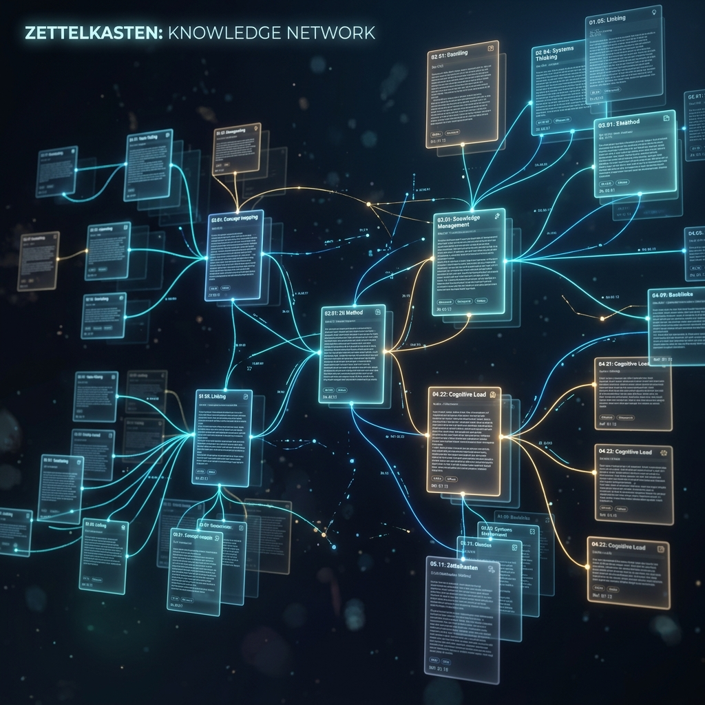
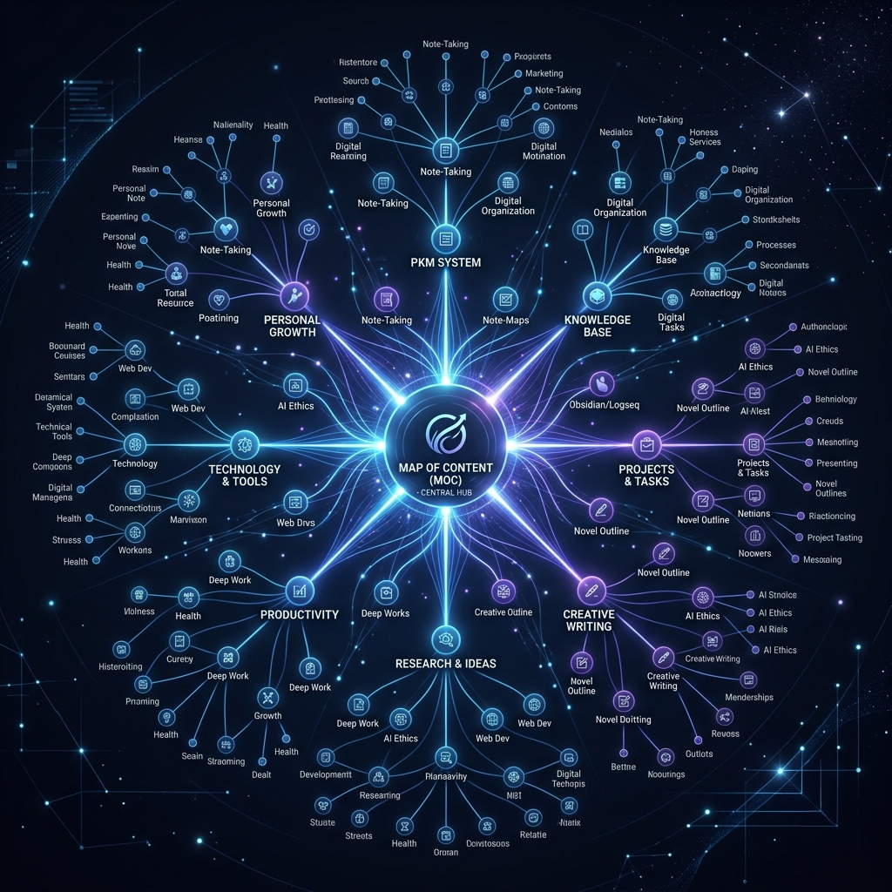
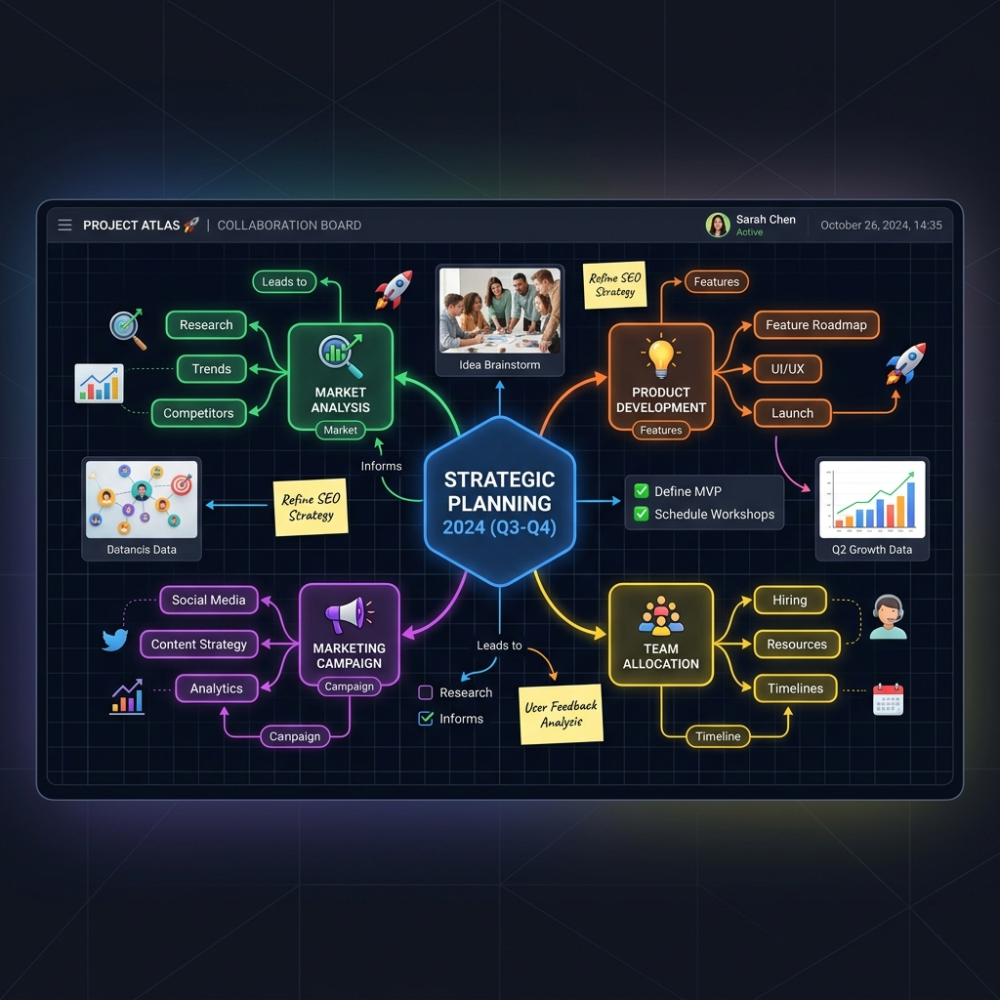

單元一：大腦的極限與第二大腦
我們的生理大腦是一個極度擅長進行「思考」、「聯想」與「創造」的器官，但它極度不擅長進行長期、精確的「記憶與儲存」。根據心理學著名的遺忘曲線，人類在接收新知識 72 小時後，會忘記高達 70% 的細節。將大腦當作記憶硬碟，不僅效率低下，還會佔用過多大腦帶寬 (RAM)，讓人感到焦慮與疲憊。
為了釋放創造力，我們需要建造一個「外部系統」，也就是第二大腦 (Second Brain)。這是一個個人的數位知識庫，幫助我們將有價值的資訊記錄下來，並建立脈絡聯結。
第二大腦 CODE 法則
打造第二大腦的核心工作流可簡化為 CODE 四個步驟：
- Capture (捕捉)：將隨手想到的點子、上課內容或網路文章快照下來，先放入收件匣。
- Organize (整理)：使用 PARA 等框架將檔案歸類到相應的資料夾或專案。
- Distill (萃取)：精煉長篇內容，提煉出最重要的核心重點，並用自己的話重寫。
- Express (表達)：在寫報告、作簡報或創作時，直接從第二大腦調出筆記快速整合輸出。
Q1. 關於人類大腦與第二大腦的敘述，下列何者正確？
A) 生理大腦非常擅長儲存細節，不需要外部系統
B) 生理大腦擅長思考，第二大腦則作為容量無限的記憶硬碟
C) 收集越多筆記代表大腦越聰明，不需建立連結
答案是 B。生理大腦不擅長長期記憶細節，第二大腦作為延伸系統，負責永久儲存與連結知識。
單元二：Zettelkasten 卡片盒筆記法
Zettelkasten 卡片盒筆記法是由德國社會學家 Niklas Luhmann 發明的。他一生利用卡片盒整理了超過九萬張卡片，並出版了 70 本著作。其核心原則在於：將知識「原子化」，並靠著「雙向連結」建立網狀的知識宇宙。

卡片筆記三大原則
- 原子化原則 (Atomicity)：一張卡片只寫一個概念。例如不要把「函數」與「三角形面積」混寫在同一頁，拆開才能與其他概念獨立連結。
- 用自己的話重寫：不要直接複製貼上。用自己的理解轉述，才能將資訊內化為個人知識。
- 強制連結：每寫完一張卡片，就要去思考它與哪些既有的舊卡片有關係，並建立超連結。
卡片的三種分類
- 靈感卡 (Fleeting Notes)：隨手寫下的點子，壽命短暫，需在 24 小時內整理。
- 文獻卡 (Literature Notes)：讀書或聽講時的重點摘要，需附帶出處與作者。
- 永久卡 (Permanent Notes)：經內化後的完整觀點，是卡片盒的核心主體，必須與其他永久卡相連。
Q2. Zettelkasten 強調的「原子化原則」代表什麼？
A) 一張卡片只記錄一個獨立的知識概念
B) 每篇筆記的字數不能超過 100 字
C) 將所有科目的筆記全部塞在一張卡片裡
答案是 A。原子化原則要求一張卡片只專注於單一想法，以便於未來彈性組合與連結。
單元三：PARA 整理心法
PARA 是由 Tiago Forte 提出的數位檔案整理系統，非常適合用於 Obsidian 資料夾的一級大分類。它不以「主題」分類，而是以「行動性」來分類：
- P: Projects (專案)：有明確目標、具體結果且有截止日期的事項。例如：🎒 歷史期末報告 (12/20前交)、學測複習進度表。
- A: Areas (領域)：長期負責、沒有截止日期，需要持續維護的領域。例如：📚 數學學習、🏀 籃球社、❤️ 個人健康。
- R: Resources (資源)：你感興趣、未來可能用得上的參考素材與素材庫。例如：🎮 遊戲設計、🌌 天文學新知、🎬 推薦書單。
- A: Archives (封存)：已完成、暫停或不再需要但不想刪除的東西。例如：✅ 八年級物理筆記、上學期社團企劃。
Q3. 「準備下學期的英文段考複習進度」在 PARA 系統中，最適合歸入哪一類？
A) P: Projects (專案) - 因為有明確的考試截止目標
B) R: Resources (資源) - 因為這是未來用不上的課外興趣
C) A: Archives (封存) - 因為應該考完後直接封存
答案是 A。期末考複習有明確的目標與截止時間，在行動上屬於典型「專案 (Project)」。
單元四：MOC 內容地圖
當你在 Obsidian 寫了上百篇卡片筆記後，如果只靠雙向連結，知識關係圖 (Graph View) 會變成一團散亂的蜘蛛網，讓你迷失方向。這時我們需要 MOC (Map of Content，內容地圖)。

MOC 就像一本書的「目錄」。它本身是一篇空白筆記，裡面列出某個主題所有相關筆記的連結與一句話簡介。例如：
# 數學 MOC
- [[一元一次方程式]] — 基礎代數概念
- [[三角形面積公式]] — 底 × 高 ÷ 2
- [[畢氏定理]] — 直角三角形斜邊計算
透過 MOC，你可以將雜亂的網狀連結，整理出一個清晰的結構。每當看到圖譜中有許多線連向同一個核心節點時，那就是建立 MOC 的最好時機。
單元五：進階技巧與畫布 Canvas
Obsidian 內建了無限大的視覺化白板功能 —— 畫布 (Canvas)。它允許我們在無邊界的面版上拖放現有的筆記卡片、新建文字、加入圖片與影片，並使用箭頭連結線將它們串聯起來，標示關係。

這項功能特別適合用於：腦力激盪、歷史時間線排列、考前跨單元心智圖總複習。配合 Daily Notes 每日筆記自動開創、Obsidian Git 自動備份到 GitHub，你就能建立起一個牢不可破的個人知識堡壘，不用擔心硬碟損壞遺失珍貴筆記。
單元一：版本控制與 Git 基礎
版本控制 (Version Control) 就像遊戲中的「存檔點」。當我們在編寫程式碼或撰寫報告時，常面臨「修改錯誤想回到上一版」或「多人協作檔案被覆蓋」的悲劇。版本控制系統能幫我們詳細記錄每次變更的細節、作者與時間，並能帶我們隨時回到過去的任一個歷史節點。
Git 是一個本地端的版本控制軟體，安裝在個人電腦上，完全不需要網路即可運作；而 GitHub 則是代管 Git 儲存庫的雲端平台，專為多人協作與備份而生。
設定全域身分
安裝 Git 後，必須在命令列輸入以下指令，設定你的簽名身分：
git config --global user.name "你的名字"
git config --global user.email "你的Email@example.com"
單元二：Git 三大區域與基本指令
Git 的變更管理圍繞著三個核心區域：工作目錄、暫存區、本地儲存庫。了解它們的三角關係是學會 Git 的基石。
- 工作目錄 (Working Directory)：你實際在硬碟上看到、修改程式碼檔案的地方。
- 暫存區 (Staging Area)：提交前的「購物車」。你在這裡挑選哪些改動要存入下一個版本。
- 本地儲存庫 (Repository)：提交後的永久快照，存放在隱藏的 `.git` 資料夾中。
常用基本指令
在資料夾下開啟終端機，執行以下核心流程：
git init # 初始化儲存庫 (只需執行一次)
git status # 檢查目前檔案狀態 (Untracked, Modified, Staged)
git add hello.txt # 將檔案加入暫存區 (購物車)
git commit -m "feat: 新增首頁" # 提交變更，建立永久快照歷史
Q1. 關於 Git 常用指令的敘述，下列何者正確？
A) 每次修改檔案後，直接輸入 git commit 就能存入版本庫
B) 修改檔案後，必須先 git add 放入暫存區，才能 git commit 提交
C) git init 會將檔案上傳到 GitHub 雲端備份
答案是 B。Git 採用兩段式提交，修改後必須先透過 git add 加入暫存區（購物車），再使用 git commit 打包存檔。
單元三：忽略檔案與復原變更
在專案中，並非所有檔案都應該上傳版控。例如記錄資料庫密碼的 `.env` 或系統編譯產生的 `*.exe`、日誌 `*.log` 等。我們可以在專案根目錄建立一個 `.gitignore` 檔案，將要忽略的規則寫入其中。例如：
# .gitignore 範例
*.log
.env
node_modules/
復原與撤銷操作
當我們改錯程式碼時，Git 提供多個時光機指令：
- `git restore <檔名>`：放棄目前工作目錄的修改，回到上次 Commit 狀態（不可逆）。
- `git restore --staged <檔名>`：將檔案從暫存區移回工作目錄（取消暫存）。
- `git reset --soft HEAD~1`：撤銷上一次 commit，但保留修改的內容，以便重新調整後再次提交。
單元四：Git 分支與衝突解決
分支 (Branch) 是 Git 的平行宇宙。當團隊中有人在開發新功能，有人在修 bug 時，大家可以在各自的分支獨立作業，互不干涉，最後再合併回主線 `main`。
分支常用指令
git branch feature-login # 建立名為 feature-login 的分支
git switch feature-login # 切換到該分支
git switch -c feature-list # 建立並直接切換至新分支
git merge feature-login # (在 main 分支下) 合併 feature-login
手動排除合併衝突 (Merge Conflict)
當兩個人同時改了同一個檔案同一行，Git 在 merge 時會停下來報衝突，並在檔案中插入標記：
<<<<<<< HEAD
console.log("本地 main 分支修改");
=======
console.log("遠端 feature 分支修改");
>>>>>>> feature-branch
解決衝突步驟：1. 打開衝突檔案，決定保留哪些程式碼並刪除衝突標記 ➡ 2. 執行 `git add <檔案>` 標記已解決 ➡ 3. 執行 `git commit` 完成合併提交。
單元五：GitHub 雲端協作、Pages 與 Actions
當我們想將本地的程式碼備份到雲端，或與團隊共同開發時，需要與 GitHub 連線。目前 GitHub 推送已強制要求使用 SSH 金鑰連線或 Personal Access Token (PAT) 進行身分驗證。
推送與拉取
git remote add origin https://github.com/帳號/專案.git # 關聯遠端庫
git push -u origin main # 推送本地提交
git clone https://github.com/帳號/專案.git # 下載遠端專案
git pull # 拉取遠端最新變更
GitHub 協作核心：Pull Request (PR)
在團隊協作中，我們不會直接將程式碼推送到 `main` 分支。而是將自己的功能分支推送到 GitHub，並發起 Pull Request (PR)。團隊成員會在線上進行 Code Review (程式碼審查)，提供回饋或批准合併，這是現代軟體開發的重要流程。
此外，GitHub 還提供了 **GitHub Pages** 免費靜態架站託管，以及 **GitHub Actions** 自動化 CI/CD（每次推送自動執行測試與部署），是建構現代網頁不可或缺的神器。
Q2. 關於 GitHub 專屬協作機制的敘述，下列何者正確？
A) Pull Request 是 Git 的內建指令，在本地端執行
B) Fork 是將別人的專案複製一份到自己的 GitHub 帳號，以取得寫入權限
C) GitHub Pages 必須租用額外的雲端伺服器並付費才能使用
答案是 B。Fork 是 GitHub 提供的機制，複製他人專案到自己帳號後可自由修改，並能發起 Pull Request 貢獻程式碼。